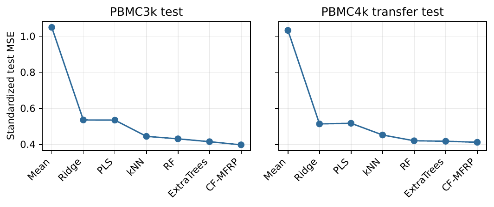

Existence and uniqueness
Uses regularization and the stated null-space condition.
Research article companion · matrix analysis · reproducible CPU study
Sparse matrix-vector products estimate changes between cell-state vectors.
Molena Huynh · public preprint companion
01 · Mathematical background
Let \(\mathbb{F}\in\{\mathbb{R},\mathbb{C}\}\), and let \(A:\mathbb{F}^n\to\mathbb{F}^m\) be a linear operator. Its matrix representation is denoted by \(A\in\mathbb{F}^{m\times n}\). The vector two-norm, Frobenius norm, and induced matrix two-norm are defined by
Let \(X\in\mathbb{R}^{n\times g}\) be a sparse cell-by-gene matrix, let \(P_\rho\) be the fitted sparse transition matrix, and set \(D_\rho=I-P_\rho\). The residual-field normal matrix is \(M+\mu I+\lambda D_\rho^\top D_\rho\), applied through sparse matrix-vector products.
For a specified tolerance, let \(\sigma_1\ge\cdots\ge\sigma_q\) denote the singular values. A rank-\(r\) approximation is justified by a bound on the discarded singular-value tail in the norm used by the associated theorem.
02 · Computational contract
The implementation exposes sparse transition, transpose, and regularized normal-operator actions.
A sparse k-nearest-neighbor graph supplies topology, while residual stopping and graph-perturbation audits control the recovered field.
Work depends on sparse matrix entries and iterative residual reduction.
Interactive matrix storage comparison
This calculator displays \(n^2\) and \(O(nr\log_2 n)\) storage models. The manuscript states the associated assumptions and reports measured quantities separately.
03 · Proposed objective
The first term anchors the residual field to fit-cell errors, the second makes the system strictly positive definite, and the third regularizes variation under the sparse transition action. Development data select \(\rho\), \(\lambda\), and the final blend weight.
04 · Algorithm
Load and verify the PBMC3k expression matrix.
Build the registered sparse cell graph and transition incidence action.
Solve the regularized normal equations matrix-free.
Audit residual, seed, and graph perturbation stability on held-out cells.
05 · Theorem map
Uses regularization and the stated null-space condition.
Counts sparse operator work.
Converts the iterative residual to a solution bound.
Controls the stability denominator.
Audits finite changes to initialization and graph construction.
These summaries provide a reading guide. The manuscript contains the complete hypotheses and proofs.
06 · Real-data provenance
| Dataset | 10x Genomics PBMC3k: approximately 2,700 peripheral blood mononuclear cells. |
|---|---|
| Original source | https://www.10xgenomics.com/datasets/3-k-pb-m-cs-from-a-healthy-donor-1-standard-1-1-0 |
| Terms | 10x Genomics source terms govern the dataset; redistribution rights should be checked before public release. |
| Split | Held-out cells with a 12-marker-gene registered task. |
| Integrity | The packaged source archive and derived outputs are checksum audited. |
| Download command | python code/scripts/download_data.py |
07 · Locked evidence

Held-out mean squared error for the registered methods. Exact values and uncertainty definitions are in the paper tables.
Inspect locked machine-readable results · Inspect evidence manifest
08 · CPU reproduction
python -m pip install -e code
python code/scripts/download_data.py
python code/scripts/reproduce.py
python code/scripts/make_figures.py
python code/scripts/validate_release.pyThe standardized scripts call the package console entry points and preserve a single implementation of the scientific algorithm.
09 · Scope and assumptions
Multi-donor and cross-platform validation are required before claiming biological generalization.
Operator-call reductions, allocation models, reconstruction audits, and wall-clock measurements constitute distinct reported quantities. Simulation supplies numerical evidence, while each conditional rank theorem applies under its stated compressibility assumptions.
10 · Citation
@misc{huynh2026singlecell,
title = {Matrix-Free Recovery of Cell-State Changes from Gene Measurements},
author = {Huynh, Molena},
year = {2026},
note = {Preprint}
}The authentic arXiv identifier will replace the preprint note upon assignment.